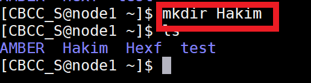
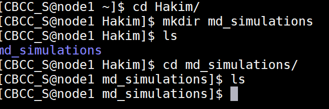
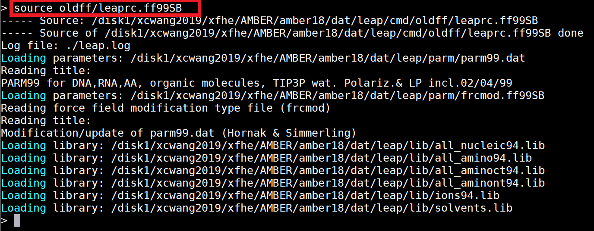
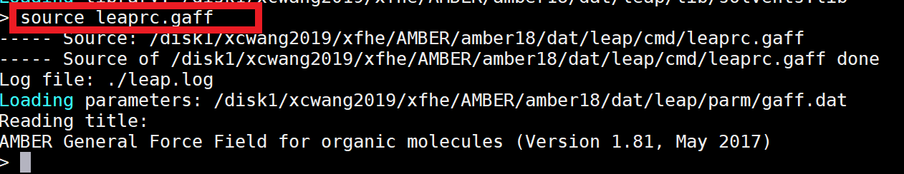
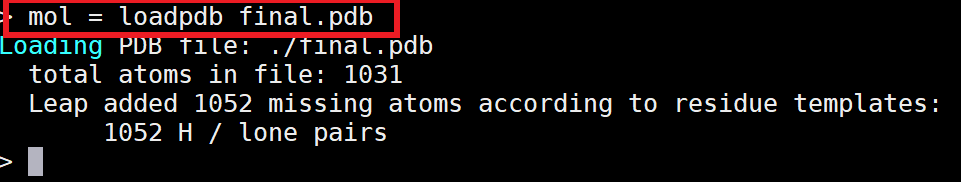
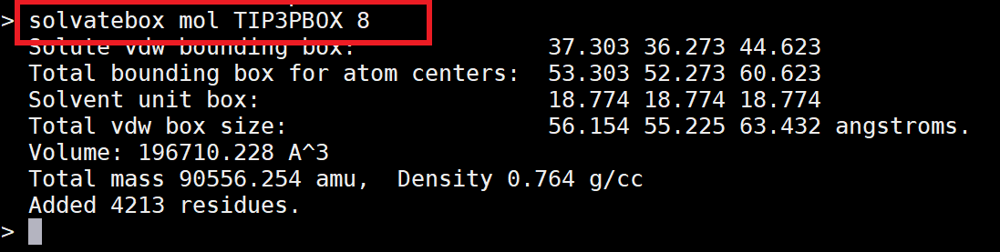
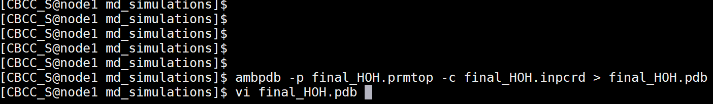

To get TOP and CRD with tLeap program of AMBER
AMBER requires three files to run. Two of these will be prepared in this step. The first is a topology file (*.top/*.prmtop), which contains all the information about the force field, including bonds, angles, torsions, charges, van der Walls, and atom types. The second is a coordinate file (*.crd/*.inpcrd), which contains the positions of all the atoms in Cartesian coordinate space. The tLeap program will be used to generate topology and coordinate files of your homology model from its pdb.
Our previous homology-modeling was done on a local Mac, but the tLeap program was installed on the server, so we need to log in the server with command
$ ssh CBCC_S@218.199.68.187 Then you will be asked to input password:CBCC_S2019.The entered password will not be displayed!
Also create your own folder on the server and name the folder with your name.
For example, your name is Hakim, then you do as below:

Then make a new directory named md_simulations

Then copy your homology_modeling PDB file to this folder with Linux command scp.
 |
|
|  | Then we need to import the appropriate force field file, here we are using AMBER99 force field. |
|  | Import the force field file of an organic molecule again because the protein is organic. |
 |
|
|  | Load pdb file. |
|  | This step is to use water molecular force field to add water to the protein, ie solvate. This step is to use water molecular force field to add water to the protein, ie solvate. Here we add 8.0 \( \overset{\circ}{A} \) water box. |
 |
The last step is to save the *.crd and *.top files. Since tleap is automatically hydrogenated for the protein, there are no special hydrogenation step in the steps. Finally exit tleap using quit. |
|  | If we want to see the PDB file after hydrogenation, it can be obtained by AMBER's ambpdb program. |
 |
|